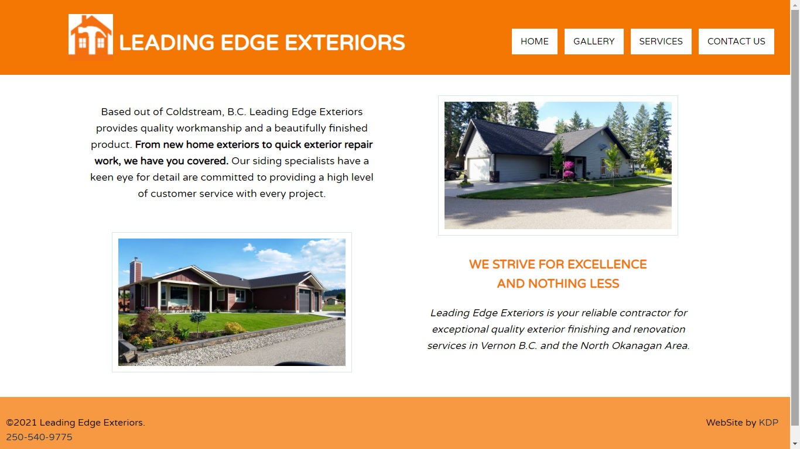

I am a hard working web developer with a passion for creating unique solutions in the least amount of time.
I have a passion for creativity. I love things that are unique and different from what people would expect.
I believe being well organized, self motivated, having great time management and work ethics are vital to being an exeptional developer.
These skills, along with my 15+ years of working in various customer service jobs have given me the confidence I need to
take on new and exciting web development opportunities.
My passion for coding started back in high school (which was too many years ago to mention)
I have always loved code, advertising and design. I got to showcase my potential during my employment at The Calgary Sun where
where I was responsible for designing and publishing ads for some of the biggest clients we had. After I was laid off durning a major recession I found out I was expecting my first daughter.
During my time at home rasing my girls I rediscovered my passion for coding. I enrolled in online courses and took on freelance work to
help build my experience and skills. Below are some of the projects I have been recently working on.

This is a website I desgined and coded from concept to completion. I worked directly with the client
to meet their specific needs. This is a small local business who needed a website to showcase their work.
This client wanted a simple, easy to navagate site that would attract new clients.
You can visit this site at Leading Edge Exteriors